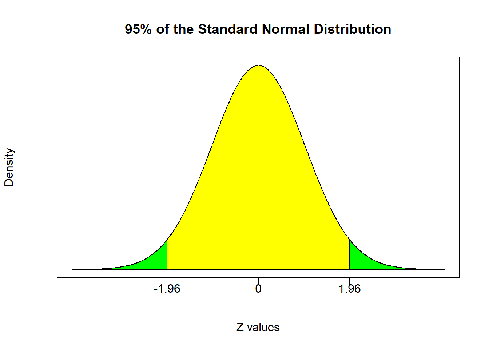

Chapter 6 Hypothesis Tests
Confidence intervals determine a range where our population mean resides given the characteristics of a sample and a desired level of confidence. Recall that the population parameter can be anywhere within the range dictated by a confidence interval.
Hypothesis testing is a similar inferential method, but it approaches the problem from the opposite direction.
You start with an unambiguous claim on the value of the population parameter
You test to see if the sample statistics are consistent with the claim (or refute it)
The general idea is that you begin with some nonarbitrary statement on what value you believe (or do not believe) the population parameter to be. You then test if the characteristics of your sample suggest that it is likely or not that a population with your proposed parameter values generated a sample like the one you currently have.
If this seems a bit vague at the moment. It will be more concrete soon. The main thing to keep in mind is that hypothesis tests are quite simple and structured. Once you learn how to perform one hypothesis test - you essentially can perform them all. This chapter guides you through some basic steps that once mastered - you’ll have a powerful tool of statistical inference under your belt.
6.1 Anatomy of a Hypothesis Test
A hypothesis test begins with a claim about the value of particular a population parameter.
This statement takes the form of a null hypothesis \[H_0 : \mu = x\]
This statement gets contrasted against an alternative hypothesis
\[H_1 : \mu \neq x\]
The null hypothesis \((H_0)\) represents a belief of a population parameter that you would like to disprove, while the alternative hypothesis \((H_1)\) is the opposite of the null and represents a claim you would like to show.
A hypothesis test uses the characteristics of the sample to determine if the statement about the population parameter in the null appears consistent (or inconsistent) with the characteristics of the sample. Recall that we are still under the assumption that the characteristics of the sample are similar to the true characteristics of the population. Therefore, if the sample characteristics are inconsistent with the statement in the null hypothesis, then you are likely to reject the null hypothesis. This means that the null hypothesis does not capture the true characteristics of the population. If the sample characteristics are similar to those stated in the null hypothesis, then you do not have evidence to reject the null and you conclude to not reject the null hypothesis.
In other words, if you reject the null, you have statistical evidence that \(H_1\) is correct (and the null hypothesis cannot be correct). If you do not reject the null, you have failed to prove the alternative hypothesis. Note that failure to prove the alternative does NOT mean that you have proven the null. In other words, there IS a difference between do not reject and accept!
This distinction between do not reject and accept cannot be emphasized enough. First, if anyone concludes that they accept the null in this class - you will get marked incorrect. If you conclude to accept the null outside of this class - then people will suspect that you don’t fully understand what you are talking about. Second, we can never say accept the null because it is simply too strong of a statement to make regarding a population parameter.
Suppose we believe that the population mean life span of our light bulbs is \(x\) hours. A hypothesis test will give us a specific way of testing this belief, and allows us to conclude whether or not this statement is consistent with our sample.
\[H_0:\mu=x \quad versus \quad H_1:\mu\neq x\]
We will discuss how to formally conduct a hypothesis tests in a bit. For now, lets compare these hypotheses with the confidence interval we calculated in the previous section.
\[887 \leq \mu \leq 928\]
Recall that our confidence interval states that with 95% confidence, the population average life span of the light bulbs is somewhere between 887 hours and 928 hours - meaning that any value within this range is equally likely. It also states that there is only a 5% chance that the population parameter lies outside of this range.
If we were to test that the population average lifespan was 1000 hours,
\[H_0:\mu=1000 \quad versus \quad H_1:\mu\neq 1000\]
then our confidence interval would give us evidence to reject the null because there would be less than a 5% chance for the null to be true. The sample characteristics and and the statement in the null hypothesis are therefore inconsistent.
If we were to test that the population average lifespan was 900 hours, then we will reach a different conclusion.
\[H_0:\mu=900 \quad versus \quad H_1:\mu\neq 900\]
Since 900 is a value inside our confidence interval,then we would not have evidence to reject the null and we therefore conclude do not reject the null. The reason why we never say accept is that while 900 is within the confidence interval, there are also a continuum of other values in there. The true population mean might be 901, 900.0001, 910, etc. If you were to accept the null, then you are explicitly stating that the population parameter is exactly 900 - we do not have enough evidence for this.
Note that while we are seeing a clear connection between hypothesis tests and confidence intervals, hypothesis tests can get more sophisticated than this. It is therefore worthwhile to consider a formal solution methodology.
6.2 Two methods for conducting a hypothesis test (when \(\sigma\) is known)
We will consider two equivalent methods for conducting a hypothesis test. The first is called the rejection region method and is very similar to confidence intervals. The second is the p-value method and delivers some very useful results that we will be using for the rest of the course. We will consider these methods in turn.
6.2.1 Rejection Region Method
All hypothesis tests start with a statement of the null and alternative hypotheses. The null makes an explicit statement regarding the value of a population parameter \((\mu)\). Once this value of \(\mu\) is established under the null, all hypothesis tests construct a test statistic under the null. In particular, assuming we know the population standard deviation \(\sigma\), we can construct a Z statistic under the null using our familiar z-transformation:
\[Z = \frac{\bar{X}-\mu}{\left(\sigma / \sqrt{n} \right)}\]
Note that we already know values from the sample \((\bar{X},\;n,\;\sigma)\) and we have a hypothesized value of \(\mu\) from the null hypothesis. We can therefore directly calculate this Z-value under the null. This would be the value of a Z-statistic given our sample characteristics under the assumption that our null hypothesis is correct.
The rejection region method takes this Z-statistic under the null and sees where it falls in a standard normal sampling distribution. The sampling distribution of a test statistic is first divided into two regions…
A region of rejection (a.k.a., critical region) - values of the test statistic that are unlikely to occur if the null hypothesis is true.
A region of nonrejection - values of the test statistic that are likely to occur if the null hypothesis is true, so they are consistent with the null hypothesis.
The regions of rejection and nonrejection are identified by determining critical values of the test statistic. These are particular values of the sampling distribution that divides the entire distribution into rejection and nonrejection regions. This is why some people refer to the rejection region approach as the critical value approach.
Once the different regions are established, then you simply see where the calculated test statistic under the null falls. If it falls inside the rejection region, then you reject the null because the characteristics of the sample are too inconsistent with the population parameter stated inside the null hypothesis. If it falls inside the nonrejection region, then you do not reject the null because the characteristics of the sample are such that the population parameter stated inside the null is possible (but we can’t say if it’s necessarily true).
6.2.1.1 The Steps of a Hypothesis Test (Rejection Region Method)
State the null and alternative hypotheses
Calculate a test statistic under the null
Determine the rejection and nonrejection regions of a standardized sampling distribution
Conclude (reject or do not reject)
6.2.1.2 Application 1
Suppose a fast-food manager wants to determine whether the waiting time to place an order has changed from the previous mean of 4.5 minutes. We want to see if our sample characteristics are consistent with an average of 4.5 minutes or not. We start with a statement of the two hypotheses.
\[H_0:\mu=4.5 \quad versus \quad H_1:\mu\neq 4.5\]
The null explicitly states that \(\mu=4.5\), so we can use this value to construct a test statistic using the information from our sample. Suppose that a sample of \(n=25\) observations delivered a sample mean of \(\bar{X}=5.1\) minutes. Suppose further that we know the population standard deviation of the wait time process to be \(\sigma=1.2\). We can calculate a test statistic under the null.
mu = 4.5
Xbar = 5.1
Sig = 1.2
n = 25
(Zstat = (Xbar - mu)/(Sig/sqrt(n)))## [1] 2.5\[ Z = \frac{\bar{X}-\mu}{\left(\sigma / \sqrt{n} \right)} = \frac{5.1-4.5}{\left(1.2 / \sqrt{25} \right)} = 2.5\]
The next step involves taking a standard normal sampling distribution and breaking it up into regions of rejection and nonrejection. Before we do this, lets take a step back and think about what it means for a sample to be consistent or inconsistent with the null hypothesis. If you had a sample average \((\bar{X})\) that was the same value as the parameter value stated in the null hypothesis \((\mu)\) then you could state that the value of \(\mu\) in the null hypothesis is very consistent with the characteristics of the sample. In fact, you can’t be more consistent than having \(\bar{X}\) and \(\mu\) being the exact same number. Furthermore, a test statistic under the null would be equal to zero because \((\bar{X}-\mu)\) is in the numerator. This implies that a test statistic under the null equal to zero is very consistent with the null hypothesis, and you will therefore not reject the null hypothesis. However, the farther away the test statistic under the null gets from zero, the farther away it gets from the center of the do not reject region and the closer it gets to the rejection regions.
Lets illustrate this supposing that we want to test the hypothesis at the 95% confidence level \((\alpha=0.05)\). The central 95% of a standard normal distribution is given by
\[Pr(-1.96 \leq Z \leq 1.96) = 0.95\]
This means that if you reached into a bowl of numbers comprising a standard normal distribution, then 95% of the time you will draw a number between -1.96 and 1.96. The remaining numbers outside of this range will show up only 5% of the time. These regions are the bases for confidence intervals and also the bases for the nonrejection and rejection regions.
The yellow-shaded region is centered on zero and represents the nonrejection region. It tells you that if you calculate a test statistic under the null to be between -1.96 and 1.96, then you do not have enough evidence to reject the null. However, the green-shaded regions are the rejection regions. It tells you that if you calculate a test statistic under the null that is greater than 1.96 or less than -1.96, then you have enough evidence to reject the null (with 95% confidence). In other words, it is so unlikely to have the null be correct while simultaneously randomly selecting a sample with the observed sample characteristics, then we conclude that the statement in the null cannot be true. In the fast food example above, the test statistic under the null of 2.5 falls in the rejection region. This means that we can reject the null hypothesis of \(\mu=4.5\) minutes with 95% confidence. In other words, we are 95% confident that the population mean is some number other than 4.5 minutes.
Changing the level of confidence \((\alpha)\)
The hypothesis test above was concluded under a specified 95% confidence level \((\alpha=0.05)\). This level of confidence effectively delivered our rejection and nonrejection regions. So… what happens when we change \(\alpha\)?
The first thing to understand is that the level of confidence does not impact the hypotheses or the test statistic under the null. The only thing the level of confidence impacts is the shaded regions in the sampling distribution. The figure below illustrates rejection and nonrejection regions for \(\alpha\) values of 0.10, 0.05, and 0.01. Note that as \(\alpha\) gets smaller, the size of the nonrejection region gets larger. This means that do not reject is becoming a more likely conclusion. This should make sense because do not reject is a wishy-washy conclusion, while reject is definitive. Do not reject states that the null may or may not be true - it’s a punt! Therefore, if you are placing more confidence on your conclusion, the more likely you are to make the wishy washy conclusion.
The fast food example had a test statistic under the null of 2.5. This test statistic falls in the rejection region for both 90% and 95% levels of confidence. This suggests that if you can reject a null hypothesis with a certain level of confidence, then you can automatically reject at all lower levels of confidence. However, the do not reject region under 99% confidence is given by \[Pr(-2.58 \leq Z \leq 2.58)=0.99\] and our test statistic of 2.5 falls inside it. We therefore conclude that we do NOT reject the null with 99% confidence. In other words, we do not have enough evidence to say that the null hypothesis is incorrect at 99% confidence, so we conclude that it may or may not be true (i.e., we punt).
Using the rejection region method, we were able to reject the null with 95% confidence \((\alpha=0.05)\) but unable to reject with 99% confidence \((\alpha=0.01)\). This begs the question as to the highest confidence level at which we can reject the null. We know it is some confidence level between 95% and 99%, but what is it exactly? We can use the rejection region approach multiple times by choosing various values of \(\alpha\) and narrow things down, or we can conduct the hypothesis test using the p-value approach.
6.2.2 P-value Approach
The P-value is an extremely useful and often misunderstood number. I therefore have THREE equivalent ways of explaining it. Each one works - so just stick with the one that works for you. Before we get to those, lets talk explicitly about what we mean when we make statements based on confidence.
When using a sample statistic to draw conclusions about a population parameter, there is always the risk of reaching an incorrect conclusion. In other words, you can make an error.
When making a conclusion about a hypothesis test, one can either reject a null hypothesis or not. Therefore, there are two possible types of errors to be made.
A Type I error occurs when a researcher incorrectly rejects a true hypothesis. (You rejected something that shouldn’t have been rejected.)
A Type II error occurs when a researcher incorrectly fails to reject a false hypothesis. (You did not reject something that you should have.)
The acceptable probability of committing either one of these errors depends upon an arbitrary confidence level \(\alpha\). To be precise, when you reject a hypothesis with 95% confidence, then you are implicitly stating that you are accepting a 5% chance of being wrong. That is where \(\alpha=0.05\) (or 5% comes from). If you decrease \(\alpha\) to 0.01 (or 1%), then you can reject a hypothesis with 99% confidence and implicitly accept a 1% chance of being wrong. The kicker is that the more you decrease the probability of committing a type I error, the more you increase the chance of not rejecting a hypothesis that you should be rejecting (a type II error). For example, if you want a conclusion with 100% confidence, then you will never reject a hypothesis no matter how wrong it actually is.
The main take away from the previous statement is that \(\alpha\) states the acceptable probability of committing a type one error. Recall in our fast food example that we rejected the null hypothesis with 95% confidence (i.e., a 5% acceptable probability of being wrong ), but we did not reject the null hypothesis with 99% confidence (i.e., a 1% acceptable probability of being wrong ). This means that the actual probability of committing a type one error is somewhere in between 0.05 and 0.01 (i.e., 5% and 1%). This actual probability of committing a type I error is called the p-value.
# Fast Food Example Revisited
mu = 4.5
Xbar = 5.1
Sig = 1.2
n = 25
(Zstat = (Xbar - mu)/(Sig/sqrt(n)))## [1] 2.5# 95% confidence:
alpha = 0.05
(Zcrit = -qnorm(alpha/2))## [1] 1.959964# 99% confidence:
alpha = 0.01
(Zcrit = -qnorm(alpha/2))## [1] 2.575829# p-value:
(Pval = pnorm(Zstat,lower.tail = FALSE)*2)## [1] 0.01241933# Actual confidence level:
((1-Pval)*100)## [1] 98.75807The calculations regarding the fast food example were repeated and continued to include a p-value. Recall that the null hypothesis stated that the population mean was equal to 4.5, and the test statistic under the null is equal to 2.5. The critical values marking the boundaries between the do not reject region and the reject regions was \(\pm 1.96\) for \(\alpha=0.05\) and \(\pm 2.58\) for \(\alpha=0.01\). Our test statistic falls inside the rejection region for \(\alpha=0.05\) and inside the nonrejection region for \(\alpha=0.01\). Our test statistic falls right on the boundary of a rejection and nonrejection region when \(p=0.0124\). This is the p-value of the problem. It states that you can reject the null hypothesis with at most 98.76% confidence and you will incur a 1.24% chance of being wrong. As expected, it is between 5% and 1% and gives you a tailor-made confidence interval for the hypothesis test at hand.
6.2.2.1 The definitions of a P-value
The p-value is the probability of getting a test statistic equal to or more extreme than the sample result, given that the null hypothesis \((H_0)\) is true.
While this is the technical definition of a p-value, it is a bit vague. There are some roughly equivalent definitions that might be easier to digest.
The p-value is the probability of committing a Type I error. If the p-value is greater than some arbitrarily given \(\alpha\), then you cannot reject the null.
The p-value is the probability that your null hypothesis is correct. The HIGHEST level of confidence at which you can reject the null is \(1-p\).
6.3 Two-sided vs One-sided Test
\[H_0:\mu=4.5 \quad versus \quad H_1:\mu\neq 4.5\]
The hypothesis test considered above is known as a two-sided test because the null gets rejected if the mean of the sample is either significantly greater than or less than the value stated in the null hypothesis. If you notice from the illustrations above, a two-sided test has TWO rejection regions - one in each tail (hence the name). Note that this is also why we calculated critical values using half of the value of \(\alpha\) and doubled the calculated probability value in order to arrive at a p-value.
In the fast food example above, suppose we want to show that the service time increased. In other words, we want statistical evidence that the wait time actually increased from a previous time of 4.5 minutes. We can provide statistical evidence by rejecting a null hypothesis that the new population average wait time is 4.5 minutes or less. This scenario delivers us a one-sided hypothesis test.
\[H_0:\mu \leq 4.5 \quad versus \quad H_1:\mu> 4.5\]
As the name implies, a one-sided hypothesis test only has one rejection region. This means that the entire value of \(\alpha\) is grouped into either the right or left tail. The tail containing the rejection region depends upon the exact specification of the hypothesis test.
The hypothesis test above is called a right-tailed test because the rejection region is in the right tail. To see this, consider several hypothetical sample averages and see if they are consistent with the null \(\mu \leq 4.5\).
Suppose you observe \(\bar{X}=4\). Is this sample average consistent with \(\mu \leq 4.5\)?
What about \(\bar{X}=2\)?
What about \(\bar{X}=1\)?
Your answer should be yes to all of these sample averages. In fact, any sample average less than or equal to 4.5 is consistent with \(\mu \leq 4.5\).
Next, recall the test statistic under the null:
\[ Z = \frac{\bar{X}-4.5}{\left(\sigma / \sqrt{n} \right)}\]
For any of the hypothetical values considered above (4, 2, or 1), the test statistic would be a negative number. Since we said that all of these sample averages are consistent with the null being true, then we would never reject the null in any of these instances. Therefore, the rejection region cannot be in the left tail because that is where the negative values of the distribution reside. The rejection region must therefore be in the right tail. Only when a sample average is sufficiently greater than 4.5 is when we can consider rejecting the null.
Now that we already have the null and alternative hypotheses down as well as the test statistic under the null, the next step is to determine the critical value that divides the distribution into rejection and nonregection regions.
# Fast Food Example Revisited
mu = 4.5
Xbar = 5.1
Sig = 1.2
n = 25
(Zstat = (Xbar - mu)/(Sig/sqrt(n)))## [1] 2.5# 95% confidence:
alpha = 0.05
(Zcrit = -qnorm(alpha))## [1] 1.644854# P-value:
(Pval = pnorm(Zstat,lower.tail=FALSE))## [1] 0.006209665# highest Confidence Level for rejection:
((1-Pval)*100)## [1] 99.37903
If we conducted this hypothesis test at the 95% confidence level ($), you will see that the rejection region is the 5% of the curve in the right tail. That means you reject all test statistics greater than or equal to 1.64. Since our test statistic is 2.5, we can reject with 95% confidence. We can also conduct this hypothesis test using the p-value approach which delivers a p-value of 0.0062. This means that if we reject the null, we only incur a 0.62% chance of being wrong. This equivalently means that we can reject the null with up to 99.38% confidence.
6.4 Conducting a hypothesis test (when \(\sigma\) is unknown)
When the population standard deviation \((\sigma)\) is unknown, it must be estimated. Just like with confidence intervals, When you replace \(\sigma\) with it’s estimate \(S\), you change the distribution from Z to t (and need to mind the degrees of freedom).
That’s the only difference
Let’s go through some applications when \(\sigma\) is unknown. You will see that the only difference is that we use a t distribution with \(n-1\) degrees of freedom to calculate rejection / nonrejection regions and p-values.
6.4.0.1 Application 2
The Saxon Home Improvement Co. has had a mean per sales invoice of $120 over the last 5 years and would like to know if the mean amount per sales invoice has significantly changed. This is enough information to state our hypotheses for a two-sided test.5
\[H_0:\mu=120 \quad versus \quad H_0:\mu \neq 120\]
You collected a sample of 12 observations, and concluded that the sample mean was $112.85 and the sample standard deviation was $20.80.
\[\bar{X}=112.85, \quad n=12, \quad S=20.80\]
This information allows us to calculate a t-test statistic under the null. The only difference is that we now have a sample standard deviation \((S)\) were we once had a population standard deviation \((\sigma)\).
Xbar = 112.85
n = 12
S = 20.80
mu = 120
(t = (Xbar - mu) / (S/sqrt(n)))## [1] -1.190785\[ t = \frac{\bar{X}-\mu}{\left(S / \sqrt{n} \right)}=\frac{112.85-120}{\left(20.80 / \sqrt{12} \right)}=-1.19\]
Now that we have our test statistic, we need to determine if it falls into our nonrejection or rejection regions. The important thing to realize is that these regions are now part of a t distribution with 11 \((n-1)\) degrees of freedom. If we consider 95% confidence…
alpha = 0.05
(tcrit = -qt(alpha/2,n-1))## [1] 2.200985The calculations suggest that the nonrejection region is between \(\pm 2.2\). Since our test statistic falls within this region, we do not reject the null. This implies that we do not have evidence that the population average sales invoice has significantly changed from $120 with 95% confidence. The conclusion is therefore do not reject.
We could also calculate a p-value for the test:
(Pval = pt(t,n-1)*2)## [1] 0.2588003# Highest confidence interval for rejection:
((1-Pval)*100)## [1] 74.11997Notice here that the p-value states that if we were to reject the null, then we would incur a 25.88% chance of being wrong. This means that we could only reject the null with 74.12% confidence.
Note that the calculations uses a new R command: pt(q,df). This command calculates the probability under a t distribution the same way the pnorm(q) command calculates the probability under a standard normal distribution. In addition, I again encourage you to always visualize the distribution and explicitly draw the rejection and nonrejection regions. This is extremely helpful when first getting started. Below you will also see a note I wrote for a previous class reinforcing how R likes to calculate probabilities. It is for reference if needed.
6.5 Appendix: A note on calculating P-values
6.5.1 The Problem
Suppose you were performing a right-tailed hypothesis test (using a t distribution) and you arrived at a test statistics under the null of \(1.57\). This means that the rejection region is in the right tail, and if you wished to calculate the p-value, then it would be the area of the curve to the right of \(1.57\).
If you have a sample of \(n = 50\), then you would use a t-distribution with \(49\) or \((n-1)\) degrees of freedom.
An illustration is below:
6.5.2 How to calculate p-values
In case you haven’t noticed by now, R has a default way of calculating probability areas…
IT ALWAYS CALCULATES AREAS FROM THE LEFT!
In other words, the default is to give you the area to the left of a number…
(Pval = pt(1.57,49))## [1] 0.9385746Don’t be annoyed about this, because all software does this (including Excel).
We can use this default to calculate the p-value (i.e. the area to the right of 1.57) in THREE different ways by relying on two properties of our probability distributions.
Property 1: The distribution is centered at zero and symmetric.
This means that the area to the right of 1.57 is the same as the area to the left of -1.57. So we can use the pt function with the default setting to this effect:
(Pval = pt(-1.57,49))## [1] 0.06142544Property 2: The distribution always adds up to one.
This means that you have a 100% chance of pulling a number between negative and positive infinity. So if you use 1.57 and the default setting which gives you the area to the left, then subtract that number from 1 to get the area to the right:
(Pval = 1-pt(1.57,49))## [1] 0.06142544Final Option: Undo the default setting…
The full command for calculating a p-value from a t-distribution (for our purposes) is as follows:
pt(q, df, lower.tail = TRUE)
Note that \(q\) is the quantity, and \(df\) is the degrees of freedom. All other entries (if not specified) go to their default values. This is where \(lower.tail\) comes in. It is set to TRUE by default, meaning that whatever number you input for q, you will get the area to the left. If you change this entry to FALSE, then the default is switched off and you will calculate the area to the right.
(Pval = pt(1.57,49,lower.tail = FALSE))## [1] 0.06142544Notice that all three ways of calculating a p-value give you the exact same result. Therefore, you do not need to master all three - just pick whichever method works best for you.
Note the language - significantly changed means that the value could have either gone up or down. This is why it is a two-sided test.↩︎